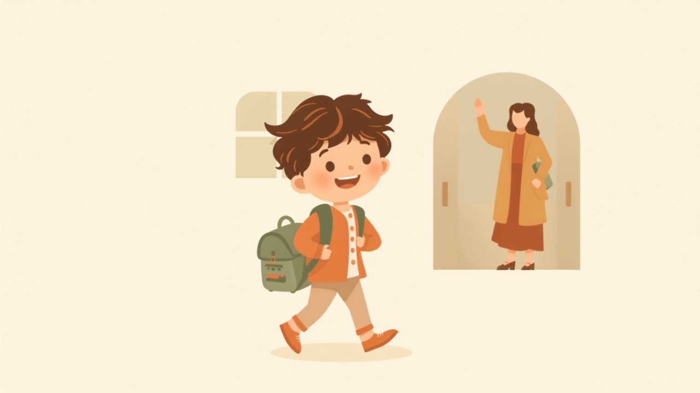

Übergang von der Tagesmutter in den Kindergarten

Aus dem Baby ist ein Kindergartenkind geworden – und irgendwann steht der Wechsel von der Tagesmutter in den Kindergarten an. Das ist ein schöner, aber auch emotionaler Schritt: für dein Kind, für dich und für die Tagesmutter, die euch ein Stück begleitet hat. So gelingt der Übergang sanft.
- Häufig rund um den 3. Geburtstag – aber es gibt keinen festen Stichtag.
- Ab 3 Jahren Anspruch auf einen Kindergartenplatz (§ 24 SGB VIII).
- Platz früh anmelden – die Nachfrage ist hoch.
- Den Wechsel behutsam vorbereiten und eine neue Eingewöhnung einplanen.
- Bewusst Abschied von der Tagesmutter nehmen.
Wann ist der richtige Zeitpunkt?
Viele Kinder wechseln rund um den dritten Geburtstag – dann suchen sie oft mehr gleichaltrige Spielgefährten, größere Gruppen und neue Anregungen. Das passt gut, denn ab dem dritten Geburtstag richtet sich der Rechtsanspruch vorrangig auf einen Platz in einer Kindertageseinrichtung. Einen Zwang auf den Tag genau gibt es aber nicht: Schau auf die Reife und die Signale deines Kindes. Ob Tagesmutter oder Kita – beide Wege sind gut, wie der Ratgeber „Kita oder Tagesmutter?" zeigt.
Früh um den Platz kümmern
Kindergartenplätze sind begehrt. Melde deinen Bedarf rechtzeitig bei der Kommune bzw. den Einrichtungen an – oft Monate im Voraus. Wie der Anspruch funktioniert und was du tun kannst, wenn kein Platz da ist, liest du im Ratgeber „Rechtsanspruch auf einen Betreuungsplatz".
Den Übergang behutsam gestalten
Ein Wechsel ist für kleine Kinder ein großer Schritt. Sprich positiv über den Kindergarten, schaut ihn euch – wenn möglich – vorab gemeinsam an, und plant für den Start eine richtige Eingewöhnung ein, so wie ihr sie von der Tagesmutter kennt (mehr dazu im Ratgeber „Die Eingewöhnung"). Vertraute Rituale und ein Kuscheltier von zu Hause geben Sicherheit. Gib deinem Kind – und dir – Zeit.
Abschied von der Tagesmutter
Die Tagesmutter war über Monate oder Jahre eine wichtige Bezugsperson. Ein bewusster Abschied hilft deinem Kind, den Wechsel zu verstehen und gut abzuschließen – etwa mit einem letzten gemeinsamen Tag, einem kleinen Geschenk oder einem Foto. Und schön zu wissen: Oft bleibt ein loser Kontakt bestehen. So wird aus dem Abschied kein Bruch, sondern ein liebevoller Übergang.
Häufige Fragen
Wann wechselt man in den Kindergarten?
Habe ich Anspruch auf einen Kindergartenplatz?
Wie bereite ich mein Kind vor?
Kann mein Kind länger bei der Tagesmutter bleiben?
Hinweis: Dieser Beitrag gibt eine allgemeine Orientierung. Zuständigkeiten und Anmeldefristen für Kindergartenplätze regeln die Kommunen; Auskünfte gibt dein örtliches Jugendamt.
Weiterlesen: Kita oder Tagesmutter? · Rechtsanspruch auf einen Platz · Die Eingewöhnung · Tagesmütter ansehen